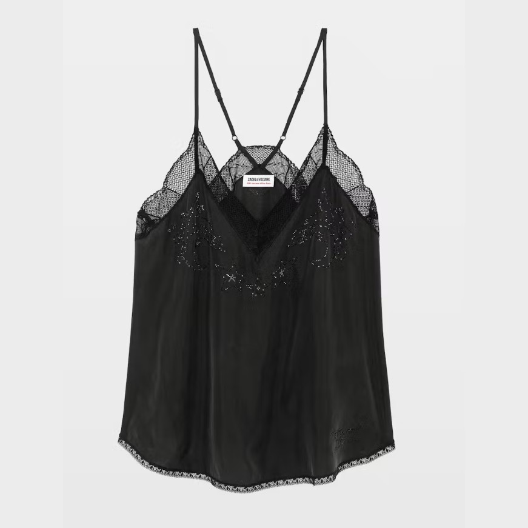
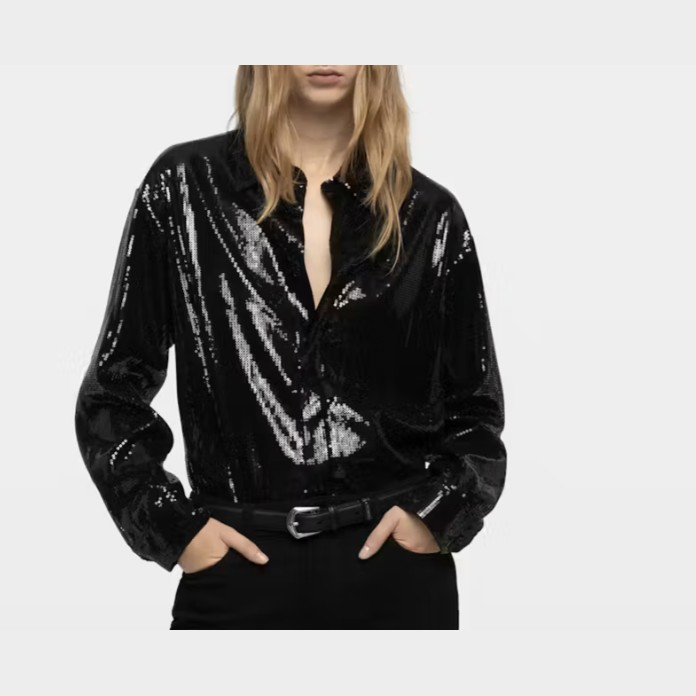

The Linen Overshirt

Washed European linen, corozo buttons, boxy fit. 89 €. Available in sand, off-white and deep navy.
Everything JAPS currently makes, in one place.
Our shirts are cut wide through the body and short in the hem so they sit well untucked. Every one of them is made from a fabric we can name and trace. The autumn photographs show how they layer together.
Washed European linen, corozo buttons, boxy fit. 89 €. Available in sand, off-white and deep navy.

Washed black silk with a lace V neckline, beadwork across the chest and adjustable straps. Worn on its own or under an open overshirt. 120 €. The best piece we make, and the one that takes us longest to finish.

Matte black sequins sewn onto a soft viscose base, cut like one of our everyday shirts: full sleeves, a proper collar and a hem long enough to tuck. 110 €. Made for nights out, and the only piece we ask you to wash by hand.
Two jumpers, both spun from Spanish merino wool in Catalonia. We keep the range small so we can reorder the same yarn year after year instead of chasing whatever is cheapest.
Three pieces, all cut long and all made from the same silk and beadwork we use on the camisole. Two of them were photographed in Cádiz for the Spring 2026 lookbook.
The tailoring is cut in Madrid and sewn by the same workshop that makes our trousers, so a jacket and a trouser in the same cloth always match. Both suits below are photographed whole in the autumn lookbook.

Oatmeal tweed, cut close through the waist and fastened high, with a dark velvet collar. 290 €. Sold on its own, or with the Pleated Trouser in the same cloth.

Cream wool with gold buttons, nipped at the waist and meant to be worn open. 265 €. The only piece we make in a half lining, so it holds its shape without the weight.
One straight cut in three fabrics, plus the wide leg from the autumn shoot. We stopped making five different fits after realising customers kept buying the same one. Sizes run from waist 26 to waist 40, in every fabric, with no exceptions.
Three bags, no more. Each one is lined with the offcuts from our shirting, so the lining changes colour from batch to batch and we cannot promise which one you will get.
The small things, made from whatever the bags and the tailoring leave behind. They are the only pieces we restock all year round.